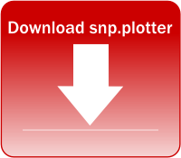
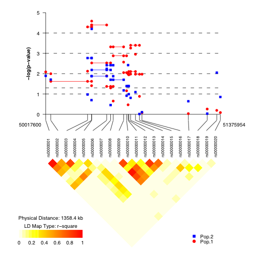

{kind=link}

 snp.plotter is an R package that creates publishable-quality plots of p-values using single SNP and/or haplotype data. Main features of the package include options to display a linkage disequilibrium (LD) plot and the ability to plot multiple sets of results simultaneously. Plots can be created using global and/or individual haplotype p-values along with single SNP p-values. Images are created as either Portable Document Format (PDF) or Encapsulated (EPS) files.
Here is a sample image as both a PDF and a EPS image. PDF images can be viewed using the free Adobe Reader software. EPS (or PDF) images can be viewed using front-end software for Ghostscript, a Postscript and PDF interpreter: Ghostview and GV for Unix/X11 systems and GSView for Windows. 
Researchers conducting gene association studies who need to create images showing results in the form of p-values of their work along with a linkage disequilibrium plot to show the underlying structure of the study population. Because snp.plotter is a visualization tool, the type of study design used either family-based, case-control, or a combination is irrelevant.
snp.plotter requires the installation of R, the statistical computing software, freely available here for Linux, Windows, or MacOS. snp.plotter uses three contributed packages: grid, lattice, and genetics available from the R Project website. snp.plotter can be downloaded here. Packages in the current working directory of R can be installed using the install.packages command.
In Windows, make sure that you have downloaded the .zip version of a package, which is a pre-compiled binary. Change the word PACKAGE_FILENAME to the name of the package being installed.
install.packages("PACKAGE_FILENAME.zip", repos=NULL)
In Unix/Linux, make sure that you have downloaded a source package, the .tar.gz version, of a package. Change the word PACKAGE_FILENAME to the name of the package being installed.
install.packages("PACKAGE_FILENAME.tar.gz", repos=NULL)
The following error indicates that additional packages need to be installed: PACKAGE_FILENAME can be grid or genetics. These packages can be downloaded from CRAN. and installed using the same process described above.
Error: package 'PACKAGE_FILENAME' could not be loaded
library(snp.plotter)
snp.plotter is then run using the following command. Explanation of snp.plotter configuration files and input files is provided in the file formats section. The configuration file specifies all the characteristics for the plot to be produced and the names of the data files to be used as input. Example configuration and input files are also provided.
snp.plotter(config.file="config.txt")Information about the configuration options is provided in the documentation, which can viewed from within R using this command.
?snp.plotter
The listing below shows the most common scenarios for inclusion of a figure into a publication; methods will vary based on the intended publication type:
\documentclass{article}
\usepackage{graphicx}
\begin{document}
\begin{figure}
\includegraphics{FILENAME}
\end{figure}
\end{document}
gs -q -dNOPAUSE -dSAFER -dBATCH -r300 -g1050x1050 -sOutputFile=FILENAME.jpg -sDEVICE=jpeg FILENAME.eps
There is an optional web interface for snp.plotter using Rpad available for download; (screenshot). Rpad allows the creation of web interfaces for R so that end users do not need to install anything on their computers. The web interface is best suited to intranet environments since users have complete access to any command in R and any system command. The instructions presented here are for local installation and usage; snp.plotter must be installed on the machine running Rpad. Instructions for server deployment are presented on the Rpad website.
Once installed Rpad is run using the following two commands:
library(Rpad) Rpad()In Windows, the web interface (snp_plotter.Rpad) is placed in C:\Program Files\R\R-2.3.1\library\Rpad\basehtml (location may vary depending on R version and where R was originally installed). If Rpad is running, snp.plotter can then be accessed at http://127.0.0.1:8079/snp_plotter.Rpad After setting the various options and clicking "Create Plot", users will see various output messages; the last message provides the location of where the created image can be found.
The interface includes the majority of features, but is limited to one dataset. The snp.plotter interface can be extended with basic knowledge of HTML and R to manipulate options presented or to perform additional analysis the researcher may require.
snp.plotter uses tab-delimited text files as input files. These files can be created in a basic text editor such as Notepad in Windows or Excel saved as tab-delimited files using the "Save As" option. A dataset is composed a configuration file, a SNP and haplotype file for each result set, one genotype file, and an optional palette file. More information about these files can be found in the documentation.
SNP.FILE=snp8_ss.txt,snp8_ss2.txt HAP.FILE=snp8_haplo.txt,snp8_haplo2.txt PALETTE.FILE=palette.txt EVEN.SPACED=TRUE USE.GBL.PVAL=TRUE DISP.HAP=TRUE DISP.LDMAP=FALSE LD.COLOR.SCHEME=heat COLOR.LIST=blue,red SYMBOLS=circle,NA PVAL.THRESHOLD=1 LAB.Y=ln GENOTYPE.FILE=snp8_geno.txt LD.TYPE=rsquare DISP.COLOR.BAR=TRUE DISP.TYPE=symbol DISP.LEGEND=TRUE SAMPLE.LABELS=Sample 1,Sample 2 IMAGE.TYPE=eps DISP.SNP=TRUE IMAGE.TITLE="8 SNP Example" IMAGE.NAME=snp8_example IMAGE.SIZE=3.5
ASSOC SNP.NAME LOC SS.PVAL + rs10_8 126272509 0.065 - rs11_8 126274467 0.029 + rs12_8 126275017 0.046 - rs13_8 126275750 0.005 + rs14_8 126283659 0.258 + rs15_8 126284467 0.036 - rs16_8 126298007 0.05 - rs17_8 126299520 0.202
ASSOC G.PVAL I.PVAL rs10_8 rs11_8 rs12_8 rs13_8 rs14_8 rs15_8 rs16_8 rs17_8 - 0.015 0.004 1 1 1 + 0.015 0.062 1 2 2 + 0.075 0.079 1 1 1 + 0.075 0.039 2 2 2 - 0.032 0.121 1 1 1 + 0.032 0.153 1 2 2 + 0.425 0.474 1 1 1 + 0.425 0.003 2 2 2 + 0.1 0.077 1 1 1 + 0.1 0.1 1 2 2 - 0.003 0.341 1 1 1 + 0.003 0.001 2 2 2
1 1 0 0 1 1 1 1 1 1 2 1 0 0 2 1 1 1 1 1 3 1 0 0 1 1 1 1 1 2 4 1 0 0 2 1 1 1 2 2 5 1 0 0 1 1 0 0 1 1
FFFFFF CCCCFF 9999FF 6666FF 3333FF 0000FF 0000CC 000099 000066
Augustin Luna, BS
2005-2007: Postbaccalaureate Intramural Research Training Award Fellow
Clinical Brain Disorders Branch (CBDB)/Genes, Cognition, and Psychosis
Program (GCAP), National Institute of Mental Health (NIMH), National
Institutes of Health (NIH)
2007-Current: Pre-Doctoral Intramural Research Training Award Fellow
Center for Cancer Research (CCR), Laboratory of Molecular Pharmacology (LMP), National Cancer Institute (NCI), National
Institutes of Health (NIH)
BS, Biomedical Engineering, Georgia Institute of Technology
PhD candidate, Bioinformatics, Boston University
Kristin Nicodemus, Ph.D., M.P.H.
Statistical Geneticist/Genetic Epidemiologist
Genes, Cognition and Psychosis Program, IRP, NIMH, NIH
Anushka Aqil - For her feedback on the software
CBDB/GCAP, NIMH, NIH
Brandeis University